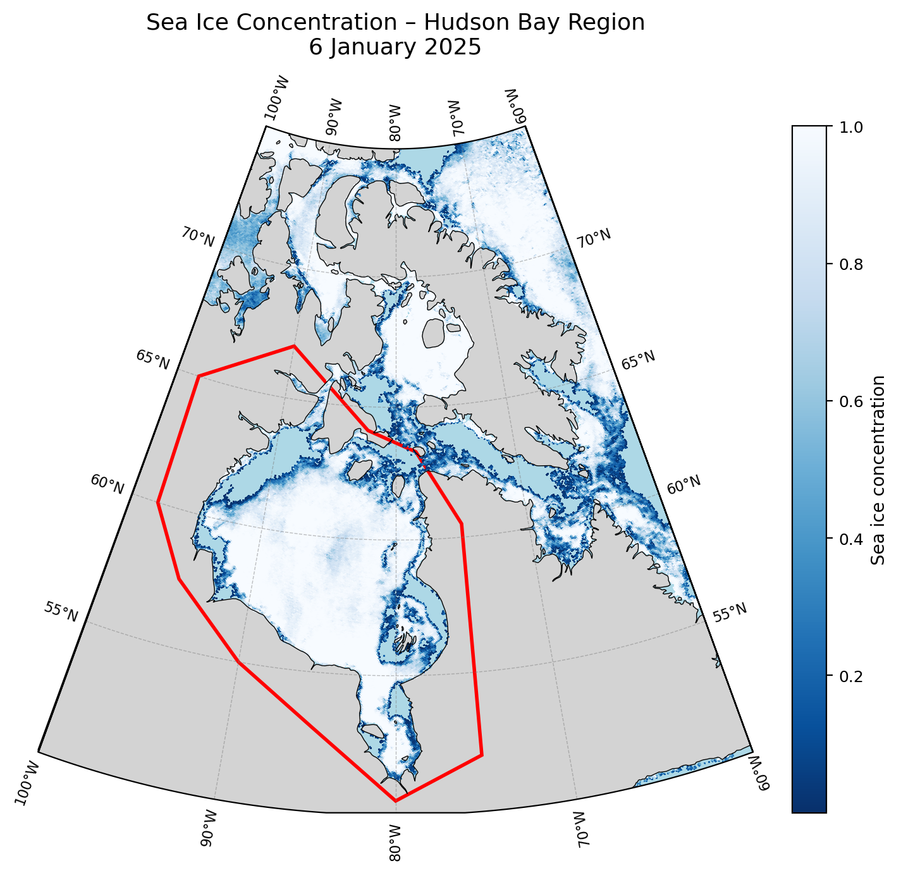
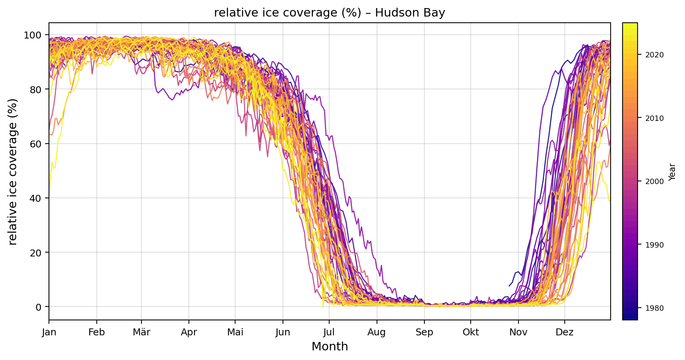
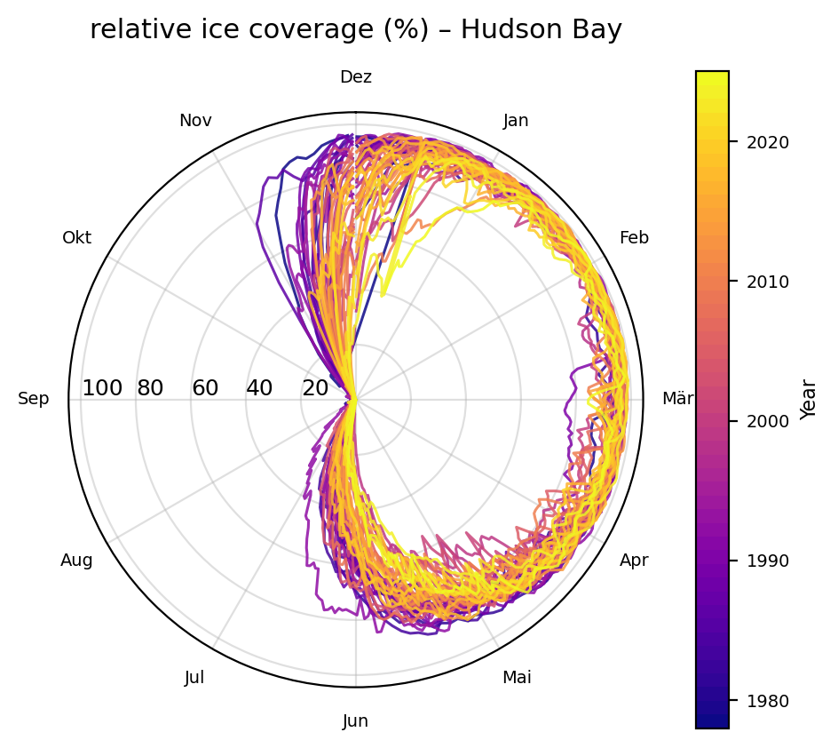

Python-based analysis of seasonal cycles and long-term trends in Arctic sea ice.

Geospatial plot of the Hudson Bay Area showing the region of interest.

Time series of sea ice coverage showing a systematic reduction of ice extent
and a shift towards shorter ice-covered seasons.

Polar representation of seasonal ice cycles illustrating the extension of
ice-free periods over recent decades.